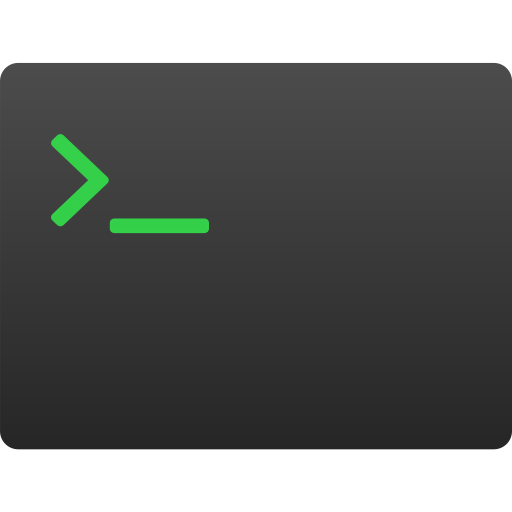
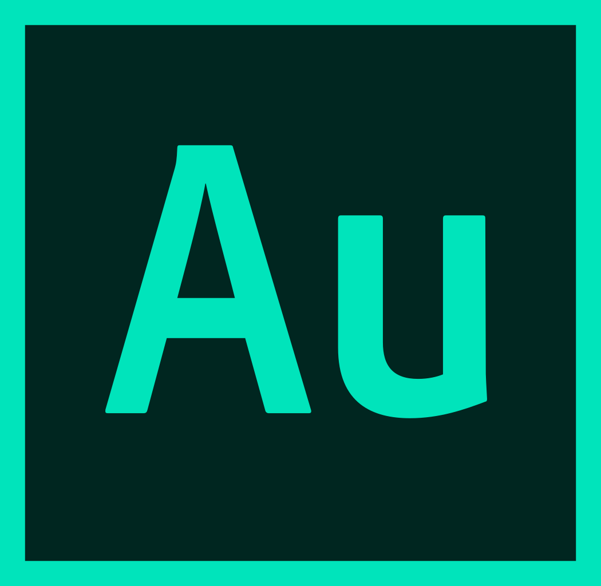

Projects
2020 Professional
Styling
Logic
Skills
- 


- 
About

I hold a BM in Vocal Performance from the Boston Conservatory at Berklee from 2014 (For more about my musical life you can visit my performance page.) and a Certificate in Web Design and Web Development from UMass Lowell from 2017. Through UMass, I have completed a variety of projects. From my time with the school, I am most proud of her assignment to redesign and build a new website for Keys for Kids, a local music school. I've also enjoyed self-teaching environments. To supplement my certificate, I've completed courses with Lynda, Udemy, Free Code Camp, and CodeAcademy. I continue these pursuits to this day.
Outside of school, I've also designed, proposed, and built a hub for the reference section of Duxbury Free Library's website. I've done work with Bespoke, a marketing company/web shop based in Boston, MA. With Bespoke, I had a taste of both marketing and coding worlds. I've created logos and generated visual assets, tested websites and created reports for the lead developers, as well as built prototypes for websites for boutique hotels.
Since moving to the UK at the end of 2019, I have had the opportunity to continue my journey as a front end developer with 5874, a small digital marketing agency based in Birmingham. Unfortunate circumstances surrounding COVID-19 put an early end to my time with the company, but I've left the experience with hands-on experience in ecommerce, Agile development, version control, email building, Wordpress, Sass, and an exciting look into Birmingham's web design and development community.
You can find the landing page I created for 5874 during my time with them here. I was also responsible for programming Lisa Kay's London store info page as well as key redesigns for Sole Bliss's home and shipping info pages.